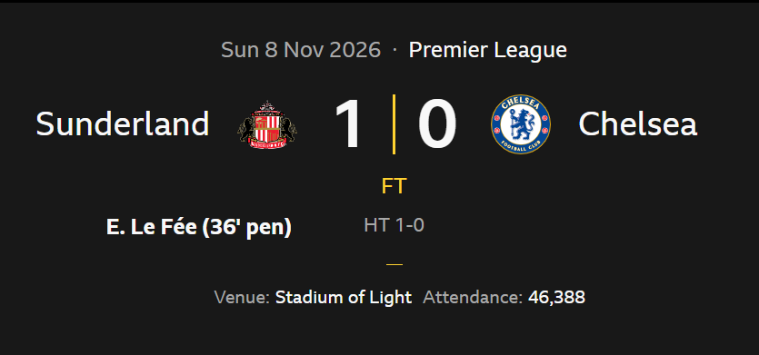
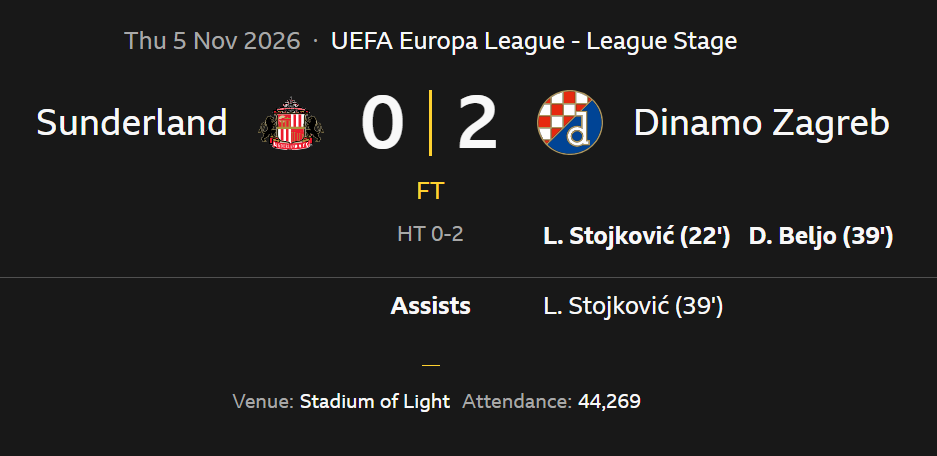
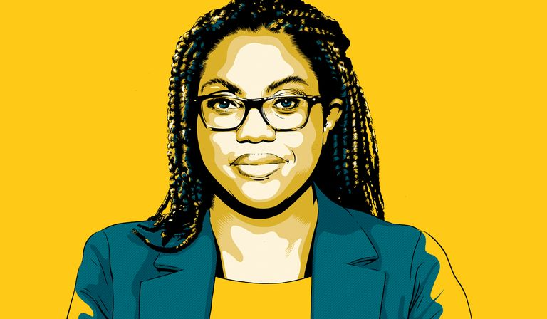
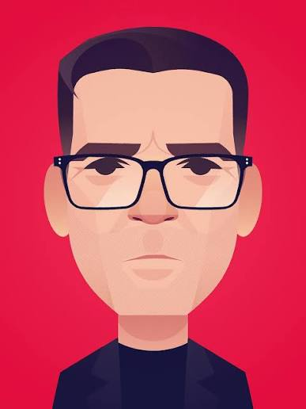
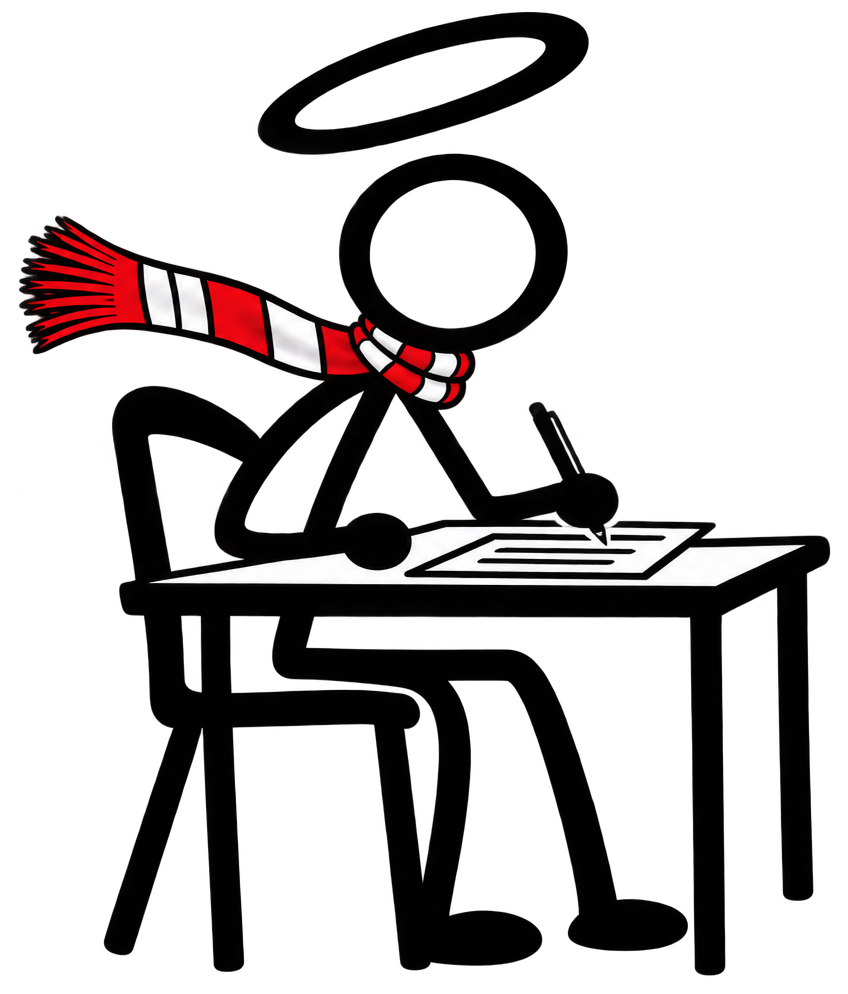
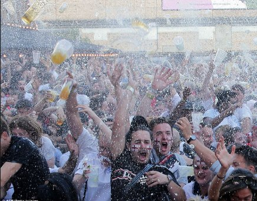
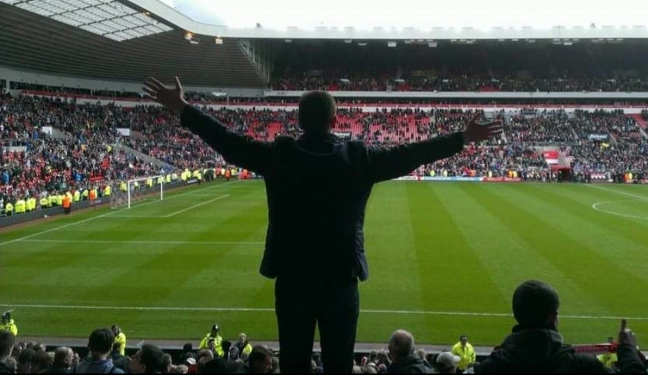

Pondering as we walk
Match Reports

Viewed through red & white eyes behind beer goggles
Sunderland 1 – 0 Chelsea

Well That Was Fun!
My brother had stayed up North for this one and there was something special in the air as we set off for the match.
It might be down to the whiskey in our morning coffee, but we were in a very positive frame of mind and convinced a win was on the cards, after our deal with a Croatian devil.
Sunderland 0 – 2 Dinamo Zagreb

Booze not Boos!
No goals, two disallowed, and a second half played almost entirely in their box.
UK News & Politics

Kemi’s Star is Rising

Tough cookie Kemi
Kemi Badenoch is getting more popular according to the polls, and certainly more popular than the waning party she leads, although a recovery is possible if Reform continues to falter.
The flirting with Andy seems to be over (was I the only one to notice that?) and she seems a bit more sure-footed and comfortable as leader.
Her takedown of Reform at the Tory party conference was impressive – They are not like us, we are not like them. It was quite powerful.
Nigel’s Star is Fading
Man of the People, my arse
A plain guide to the ownership structure, and the questions supporters' groups keep asking.
Andy Burnham – Benign or Bold?

Ah, isn’t he lovely?
The numbers behind this year's rise, and who ends up paying most of it.
Is Suella set for the Liz Truss Circuit?
What's being proposed, who it affects, and how to have your say before the deadline.


MusingsBeer in the Stands! OMG

This isn’t cricket!
What is Andy Burnham thinking?
If drink is ever allowed in the stands I suggest you invest in your local dry cleaners, if you have any spare cash.
The constant comings and goings to the toilet and bar will also cause a wee bit of friction. You get grumbling now when you stagger back to your seat after a half-time pint.
As for my beer limit, it would be easily exceeded with all that entails. I need to consider my marriage.
Should there be a Wealth Tax for the Super Rich?
Nothing has happened for an hour and a half, and still nobody leaves. A short piece on waiting for things that might not come.

Wise men say only fools rush in ...
About Saintly Ponderings

My brother gave me this domain as a present, hoping I might stop watching TV, build this site, put stuff down and stop bending his ear. Let’s see.
It’s like a blog, I suppose, and will develop.